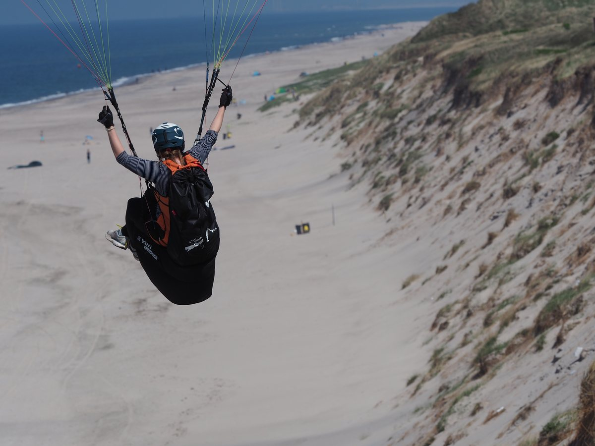

Gleitschirmfliegen · Weitblick
Thermik lesen, nicht gegen den Wind kämpfen
In der Luft gewinnt man Höhe, indem man das Gelände liest, tragende Luftströme spürt und im richtigen Moment konsequent steuert. Genauso baue ich digitale Produkte: erst aus der Vogelperspektive verstehen, wo es hakt, und dann eine Lösung schaffen, die den Alltag spürbar leichter macht.